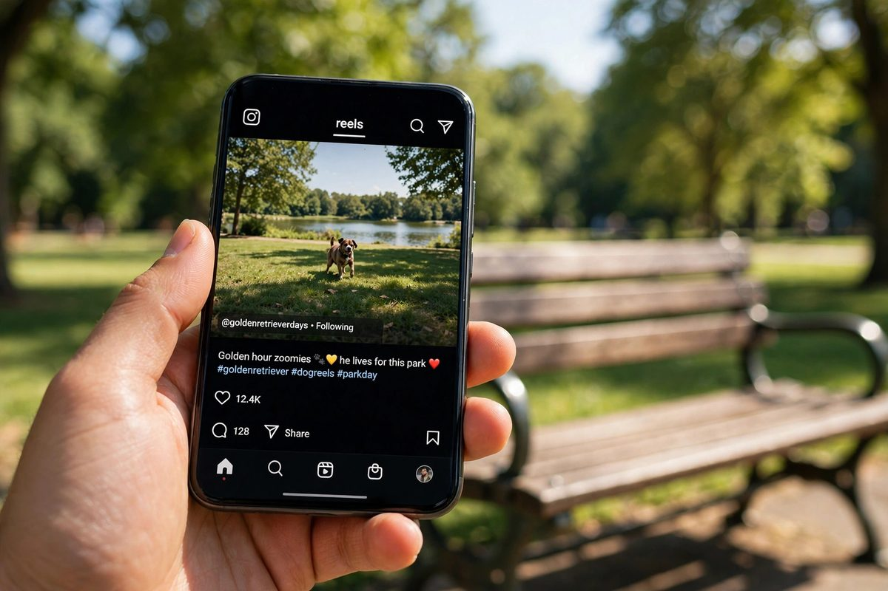
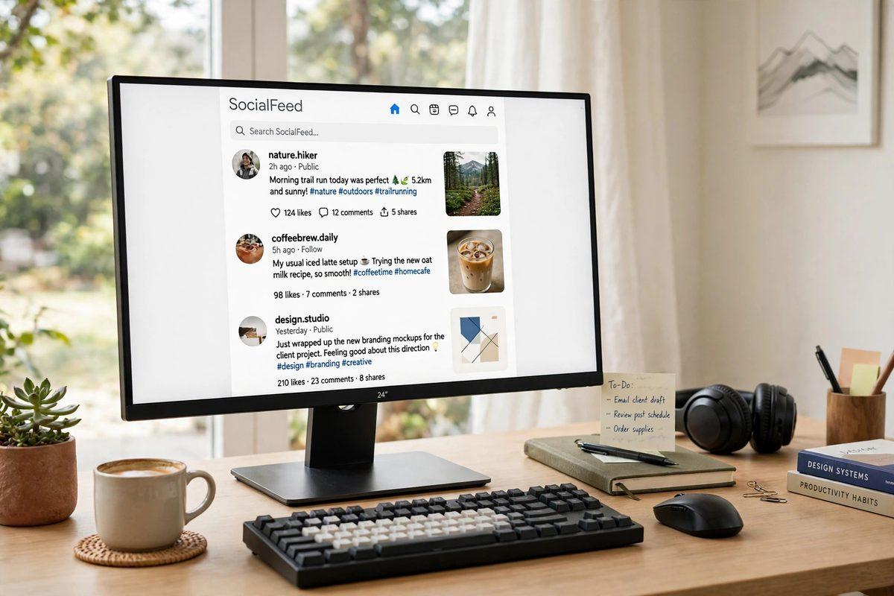
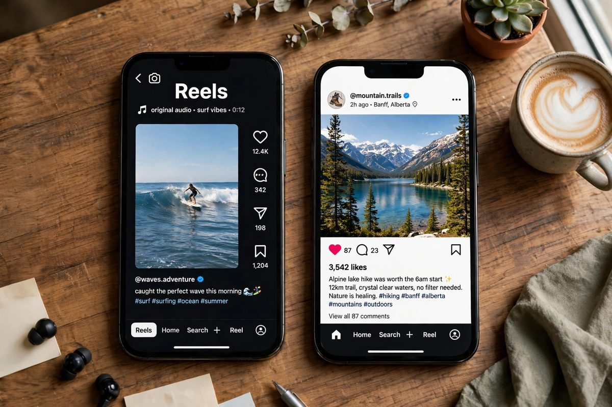
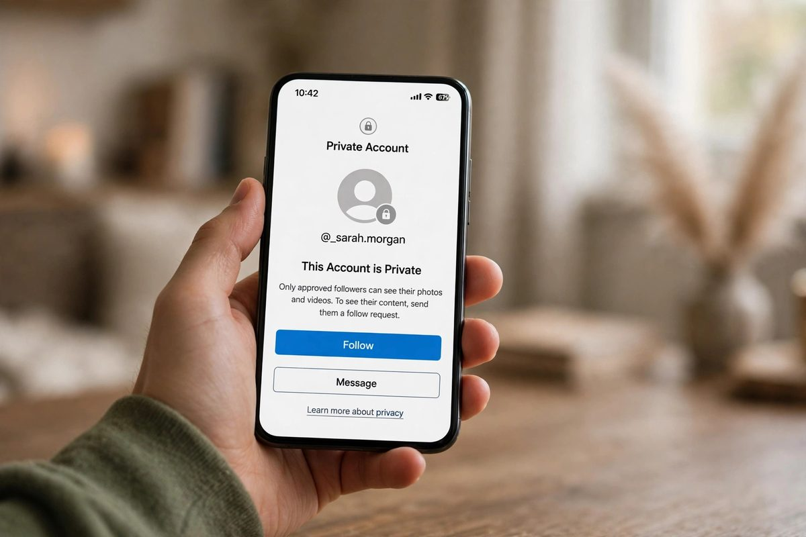
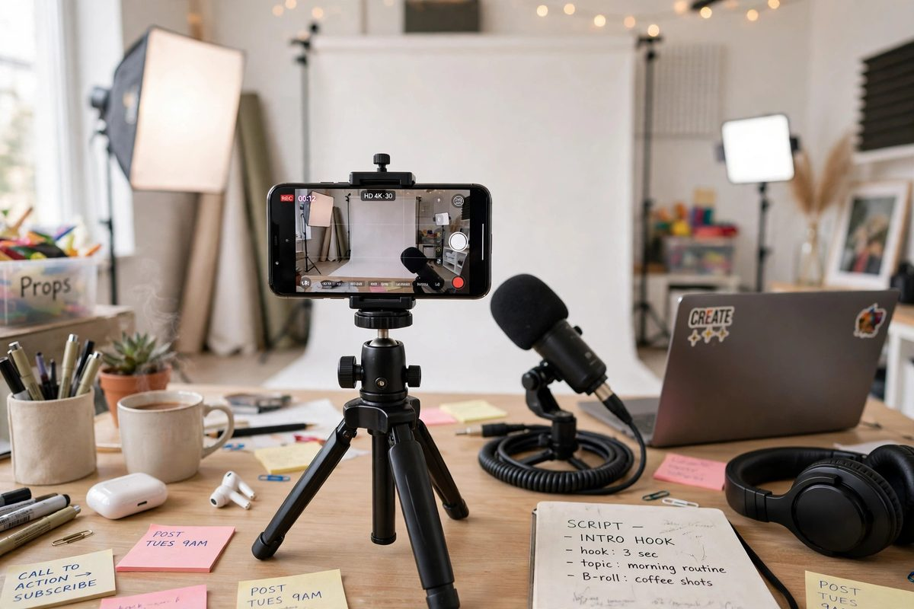
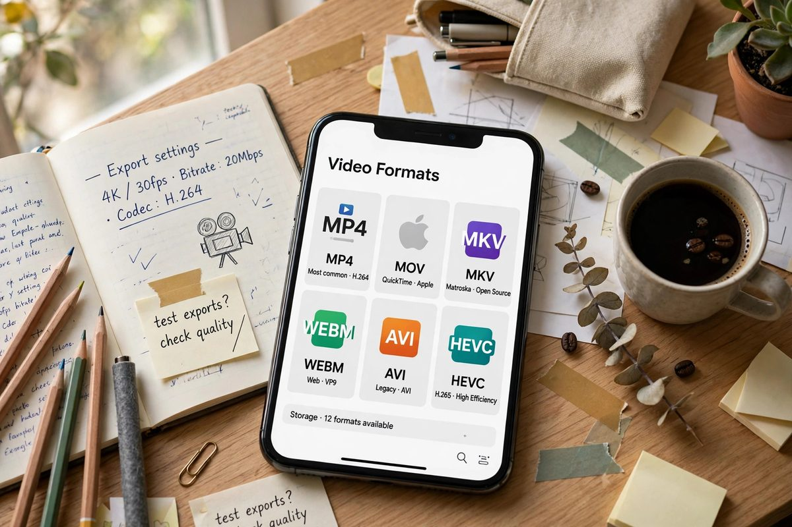
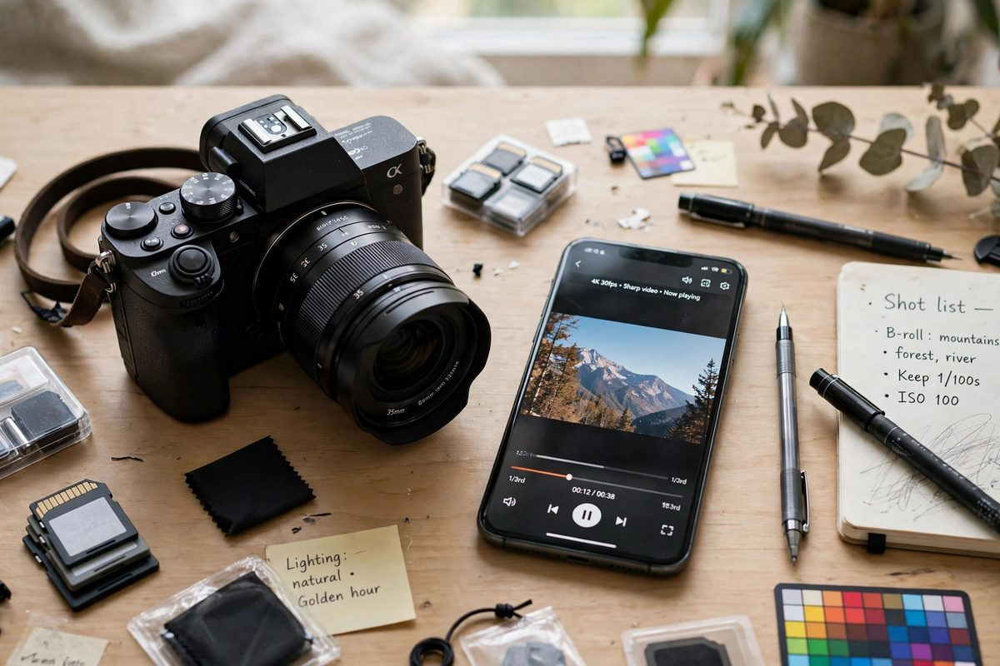

Instagram Video Downloader
Paste an Instagram post or Reel link to identify it and see exactly how to save it.
How to save it
- Tap the bookmark icon in the Instagram app to save the post to your Saved collection (private, works for every public post).
- For a Reel, tap Share and look for the Download option. It appears only when the creator allows downloads.
- If Download is missing, the creator disabled it or the music licence blocks it. Share the link instead of keeping a copy.
- Never enter your Instagram password on a downloader site. A legitimate tool never needs it.
More Tools
Guides
How to Save Instagram Reels: The Official Ways That Actually Work
Save Instagram Reels for offline viewing using Instagram's own features, plus what to do when a Reel cannot be saved.

How to Download Instagram Videos to Your Phone: iPhone and Android
Save Instagram videos on your phone the safe way, with the official options for iPhone and Android.

How to Save Instagram Videos to Your PC: Browser Options Explained
Save Instagram videos on Windows and Mac using the browser, with honest limits and safe habits.
Instagram Stories: How Saving Works and What You Can Keep
Save Instagram Stories before they disappear, using Highlights, archives, and the official options.

Instagram Profile Picture Viewer: See Any Public Profile Photo Full Size
View Instagram profile pictures in full size, how the profile photo system works, and the privacy limits.

Instagram Reels vs Feed Posts: Which Format to Save and Share
The differences between Reels and feed posts, and how saving, downloading, and sharing work for each.
Is Downloading Instagram Videos Legal? The Rules in Plain English
Copyright, Instagram's terms, and privacy rules for saving Instagram videos, explained simply.
Instagram URL Formats: Posts, Reels, Stories, and Profiles
Read any Instagram link: post URLs, Reel links, profile URLs, and how to tell them apart.

How to Save Instagram Videos Without Installing Any App
Keep Instagram videos using only your browser and Instagram's own features, with nothing to install.

Instagram Private vs Public Posts: What You Can Save and Share
How private and public Instagram accounts differ, and what that means for saving, sharing, and downloading.

Instagram Video Download Not Working? Fixes for Common Errors
Why Instagram downloads fail and how to fix each problem, from disabled downloads to login and network errors.

Instagram Reels Quality Guide: Resolution, Size, and Sharp Video
Why Reels look blurry, what resolution they use, and how to keep your downloads and uploads sharp.

How to Save Instagram Photos and Carousels: The Official Methods
Save Instagram photos and multi-photo carousels using Instagram's Save feature and your own camera roll.

Instagram Video Formats: Reels, Feed Video, Stories, and Live
Every Instagram video format explained, with lengths, sizes, and how saving works for each one.

Instagram Saved Collections: Organise Everything You Save
Use Instagram collections to organise saved posts, Reels, and videos so you can actually find them again.

Instagram Downloader Safety: Protect Your Account and Your Phone
Stay safe with Instagram downloaders: spot scams, protect your password, and avoid account bans.

Instagram Video Download Quality: What You Get and Why
Why downloaded Instagram videos are smaller and softer than the original, and how to get the best quality.

How to Share Instagram Videos Properly: Links, Reposts, and Credit
Share Instagram videos the right way: links, Story shares, reposts, and giving credit to creators.

Embedding Instagram Videos on Your Website: The Official Method
Add Instagram posts and Reels to your website with the official embed code, and keep them working.

Instagram Videos for Travel: Offline Viewing on Flights and Trips
Prepare Instagram videos for a trip, what works offline, and how to keep your saved content available.